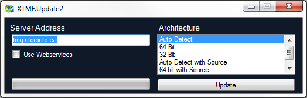

XTMF Model Setup
Installing / Updating XTMF
Installing and updating XTMF are done through the same program, XTMF.Update2.exe, which is available for download from the TMG website or by request of TMG Staff. On first install, the executable should be placed into an empty folder, where it will place the files needed to run XTMF. When run, the following window will appear:

To connect to the TMG code server, leave the Server Address field to its default value. The program can be configured to use webservices for downloading in networks with particularly restrictive firewall protocols by checking the box underneath the Server Address field. Finally, the Architecture combobox on the right-hand-side selects the code build architecture that will be installed. The ‘auto detect’ option is recommended for all users to ensure that they get the architecture most compatible with their system. The option to “auto detect with source” (and similarly “32-bit with source” and “64-bit with source”) can be used to retrieve XTMF’s source code as well as the compiled program. Alternatively, and preferably, all of the source code is available online at https://github.com/TravelModellingGroup/XTMF.
Importing the Model System
The model system will come in an XTMF model system file. This file should be easily importable. Consult the XTMF documentation to show you how to do this.
Project Setup
We recommend creating a new project when working with GTAModel V4.0 to separate it from previous models. Inside of the project you wish to add GTAModel to select to add a model system. Select the imported model system and it will be added to the project. In addition you will need to include the V4Input directory to you Projects directory. This directory by default is located in “My Documents/XTMF/Projects”.
Consult the XTMF documentation to change this if desired. Alternatively we can also change the Input directory in the model system. Consult TMG for further details if you are unsure of how to do this.